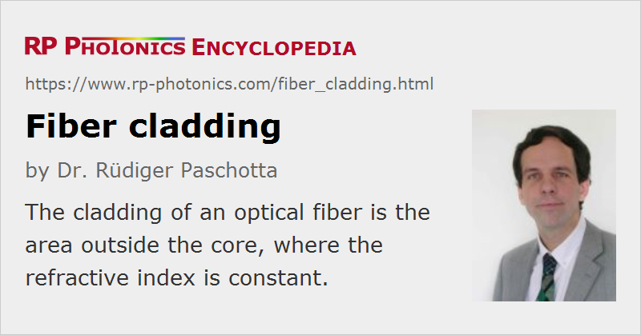

Fiber Cladding
Definition: the area(s) around the core of an optical fiber
German: Fasermantel
Category: fiber optics and waveguides
How to cite the article; suggest additional literature
Author: Dr. Rüdiger Paschotta
An optical fiber usually has some kind of fiber core. The area around the core is then called the fiber cladding.

For fibers which are not simple step-index fibers, but have a more complicated refractive index profile, one usually considers the cladding to be only the area where the refractive index starts to stay constant – up to the outer cladding radius, where one may have air or some polymer coating, for example.
For single-mode fibers, the cladding usually covers a much larger area than the core, but for some multimode fibers the opposite may be true.
Usually, the cladding is fabricated together with the fiber core by pulling from a fiber preform.
Cladding Diameter
The diameter of a fiber cladding is often chosen to be 125 μm, which is a standard value. Although it is often irrelevant concerning the guiding properties, it can nevertheless have a substantial practical importance:
- When fibers are made thicker, they more easily break when one tries to bend them. However, increased cladding diameters are sometimes necessary, e.g. for high-power devices or for multi-core fibers with a larger number of cores.
- Many fiber tools such as fiber strippers and fusion splicers are optimized e.g. for the 125-μm standard cladding diameter and may then not work well for non-standard fiber diameters.
- Fusion splicing and mechanical splicing are usually difficult when the two fibers have different cladding diameters. There are special solutions, however, for such cases.
During fiber pulling from a preform, the cladding diameter is held constant by a feedback system, which continuously measures the diameter of the drawn fiber and adjusts the pulling speed appropriately.
Numerical Aperture of the Cladding
The numerical aperture of a fiber is usually considered as a value applying to the core/cladding interface. However, one may specify the numerical aperture of the cladding, considering the interface between the cladding and a coating outside the cladding, for example.
Silica Fibers
In case of silica fibers, the cladding often consists of pure silica, while the core is doped e.g. with germania in order to achieve a somewhat increased refractive index. In other cases, e.g. often in large-core multimode fibers, one may have an undoped core and an index-depressed cladding, where the refractive index is somewhat reduced e.g. with fluorine or boron doping.
Double-clad Fibers
There are so-called double-clad fibers, which in addition to the outer cladding have a pump cladding (or inner cladding), into which one may inject pump light e.g. for a fiber amplifier.
Air Cladding of Photonic Crystal Fibers
Some photonic crystal fibers have an air cladding. This is a fiber cladding which is surrounded by a barrier which consists mostly of air.
Light in Core and Cladding
A fiber core can guide light such that it mostly propagates in the core, but some smaller or larger fraction of the optical power may propagate in the region just around the core, i.e., extending somewhat into the cladding. Besides, there are also cladding modes which can cover much of the cladding area.
In many cases, one tries to launch light only into the guided modes of the fiber and not into any cladding modes. However, substantial powers may get into cladding modes due to imperfect launching, or later on due to excessive bending of the fiber (→ bend losses) or because of inhomogeneities of the fiber core (particularly for low-NA fibers).
Questions and Comments from Users
Here you can submit questions and comments. As far as they get accepted by the author, they will appear above this paragraph together with the author’s answer. The author will decide on acceptance based on certain criteria. Essentially, the issue must be of sufficiently broad interest.
Please do not enter personal data here; we would otherwise delete it soon. (See also our privacy declaration.) If you wish to receive personal feedback or consultancy from the author, please contact him e.g. via e-mail.
By submitting the information, you give your consent to the potential publication of your inputs on our website according to our rules. (If you later retract your consent, we will delete those inputs.) As your inputs are first reviewed by the author, they may be published with some delay.
See also: fibers, fiber core, cladding modes, cladding mode strippers, double-clad fibers, fiber fabrication
and other articles in the category fiber optics and waveguides
|  |
If you like this page, please share the link with your friends and colleagues, e.g. via social media:
These sharing buttons are implemented in a privacy-friendly way!